MyBox User Guide – File Tools v6.6
MyBox: Easy Tools Set
User Guide – File Tools
Author: Mara
Version: 6.6
Date: 2022-9-28
Contents
1 Introduction 3
1.1 Main Interface 3
1.2 Resources Addresses 4
1.3 Documents 5
1.4 Menu of Tools 5
2 Arrange Files 6
3 Sychronize Directories 7
4 Archive/Compress 8
5 Decompress/Unarchive 9
6 Cut File 10
7 Merge Files 10
8 Find Files 11
9 Check Redundant Files 12
10 Compare Files(bytes) 13
11 Rename Files 14
12 Copy Files/Directories 15
13 Move Files/Directories 15
14 Delete Files/Directories 16
15 Delete Empty Directories 16
16 Delete Files under Java IO Temporary Path 16
17 Delete Nested Directories 17
This is desktop application based on JavaFx to provide simple and easy functions. It's free and open sources.
|
Contents |
Link |
|---|---|
|
Project Main Page |
|
|
Source Codes and Compiled Packages |
|
|
Submit Software Requirements and Problem Reports |
|
|
Data |
|
|
Documents |
|
|
Mirror Site |
|
|
Cloud Storage |
https://pan.baidu.com/s/1fWMRzym_jh075OCX0D8y8A#list/path=%2F |

|
Name |
Version |
Time |
English |
Chinese |
|---|---|---|---|---|
|
Development Logs |
6.6 |
2022-9-28 |
||
|
Shortcuts |
6.5.6 |
2022-6-11 |
||
|
Packing Steps |
6.3.3 |
2020-9-27 |
||
|
Development Guide |
2.1 |
2020-8-27 |
||
|
User Guide - Overview |
6.6 |
2022-9-28 |
||
|
User Guide - Document Tools |
6.6 |
2022-9-28 |
||
|
User Guide - Image Tools |
6.6 |
2022-9-28 |
||
|
User Guide - File Tools |
6.6 |
2022-9-28 |
||
|
User Guide - Network Tools |
6.6 |
2022-9-28 |
||
|
User Guide - Data Tools |
6.6 |
2022-9-28 |
||
|
User Guide - Media Tools |
6.6 |
2022-9-28 |
||
|
User Guide - Development Tools |
6.6 |
2022-9-28 |
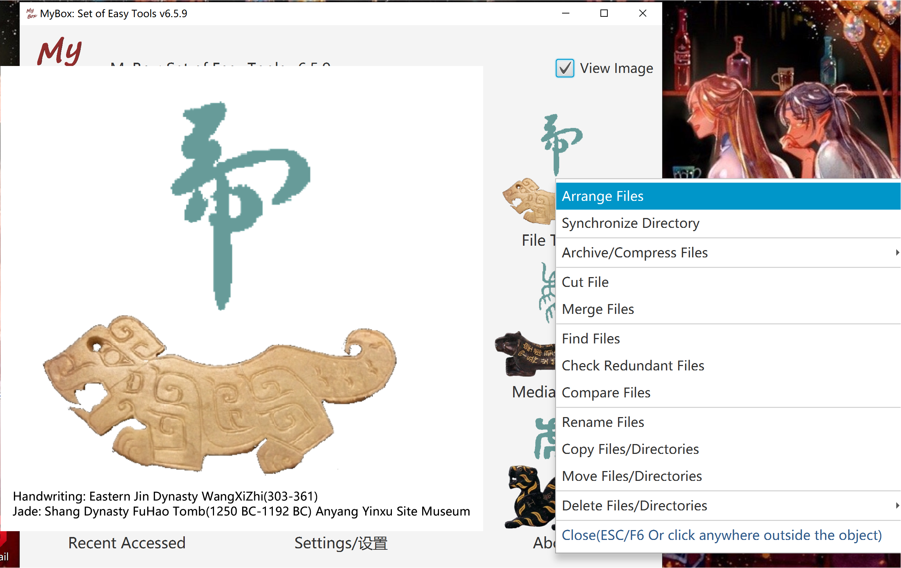
Reorganize files under new directories by modifed time.
This tool can be used to handle lots of files which need be archived according to time, like photoes, screenshots of games, or system logs.
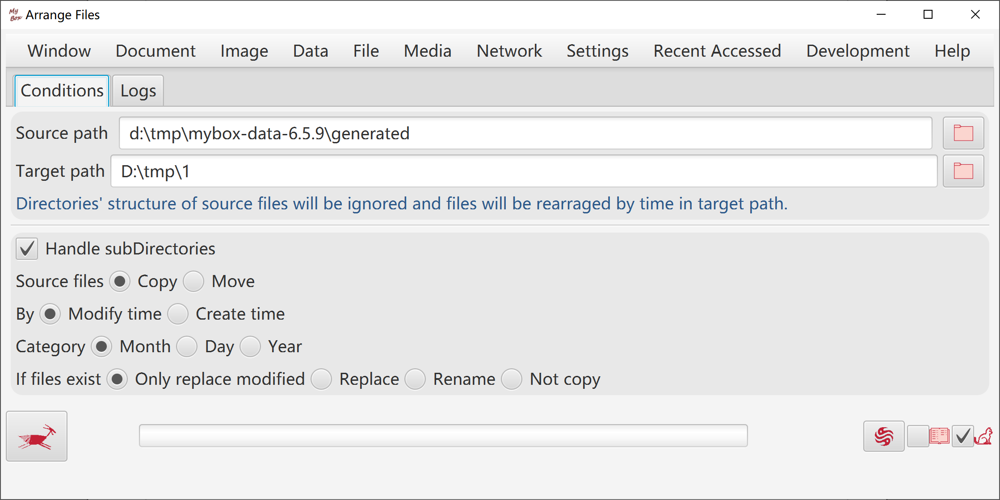
Options like:
Whether copy sub-directories or new files.
Whether only copy modified files after specific date time.
Whether keep attributes of original files.
Whether delete non-existed files/directories under original directory.
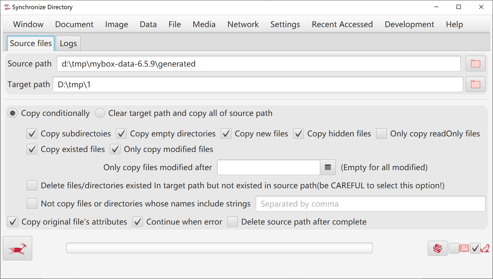
Archiving is the process to collect multiple files/directories as single file. Some archive formats like zip and 7z implement compression too.
Compressing is the process to reduce size of single file. Generally it happens after archiving.
Supported archive formats include zip, tar, 7z(Only support some algorithms), ar, cpio.
Supported compress formats include gzip, bzip2, xz, lzma, Pack200, DEFLATE, snappy-framed, lz4-block, lz4-framed.
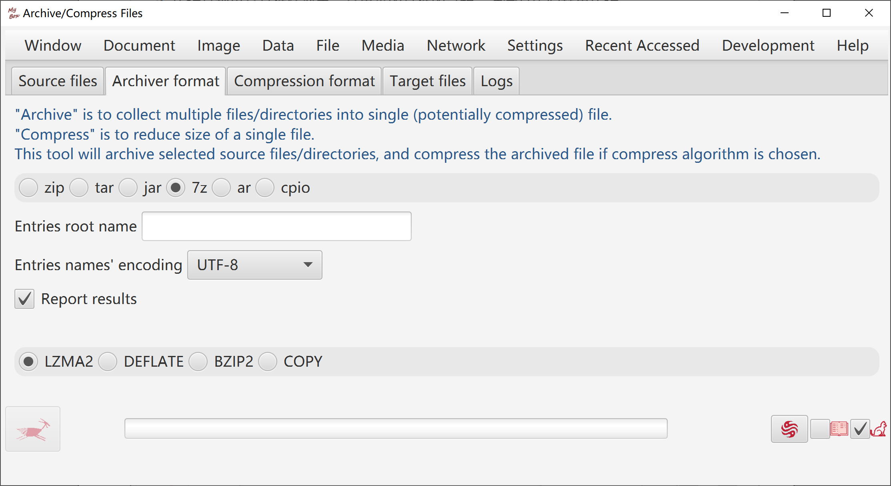
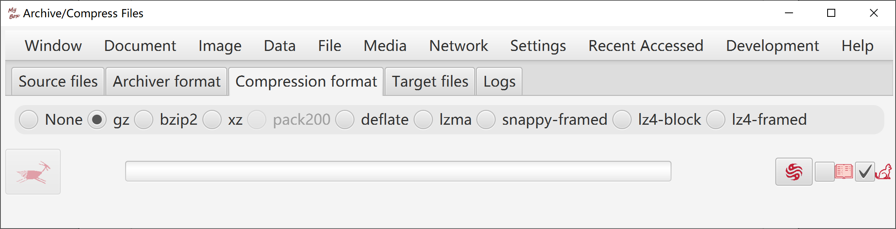
Unarchiving is the process to restore an archived file to original files and directories.
Decompressing is the process to restore a compressed file to original file.
Supported unarchive formats include zip, tar, 7z(Only support some algorithms), ar, cpio, arj, dump.
Supported decompress formats include gzip, bzip2, xz, lzma, Pack200, DEFLATE, snappy-framed, lz4-block, lz4-framed, DEFLATE64, Z.
When unarchive/decompress, the formats can be defected automatically meanwhile user can choice the formats since some formats can not be defected.
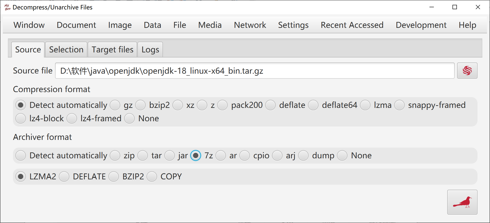
When
unarchive, files tree is displayed to help user select which to be
extracted.
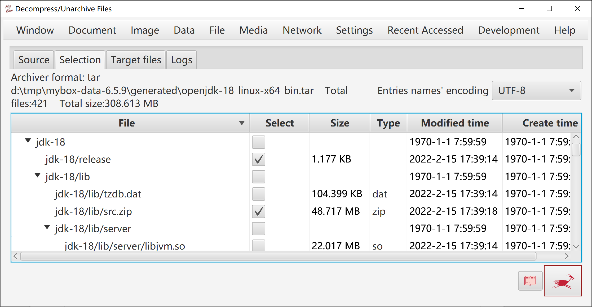
By files number
By bytes number
By start-end list

Combine bytes of multiple files into one file.
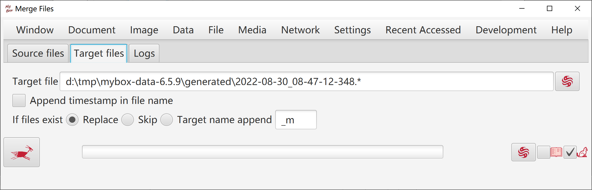
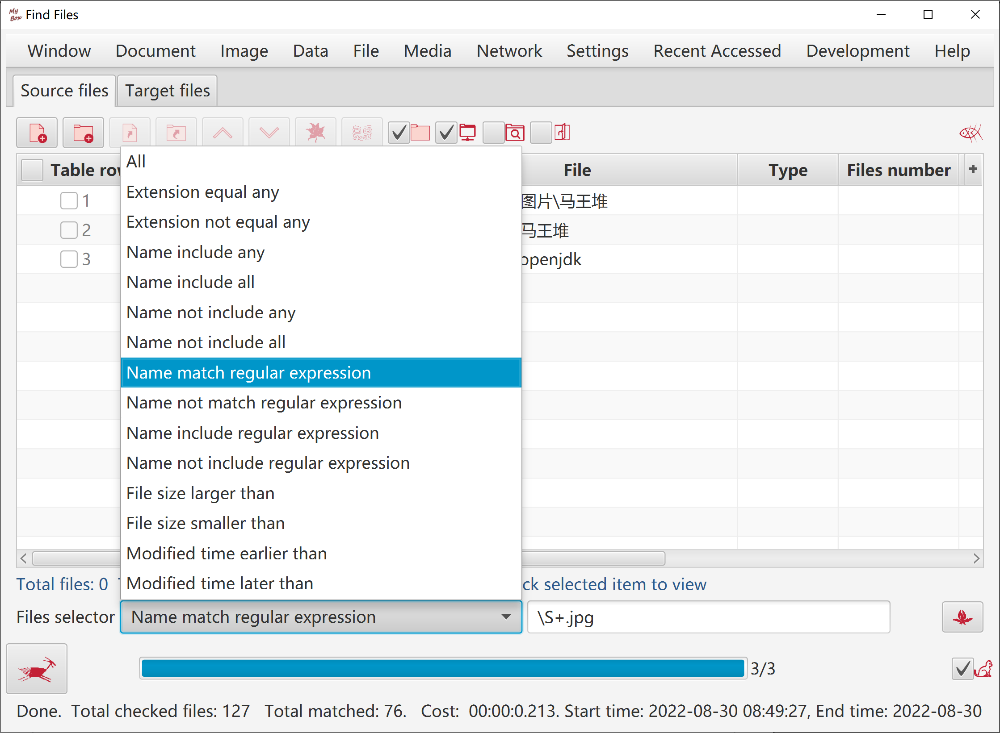
Find duplicated files according to MD5.
Files tree is displayed to help user delete redundant files.
Deletion can be executed while checking is running.
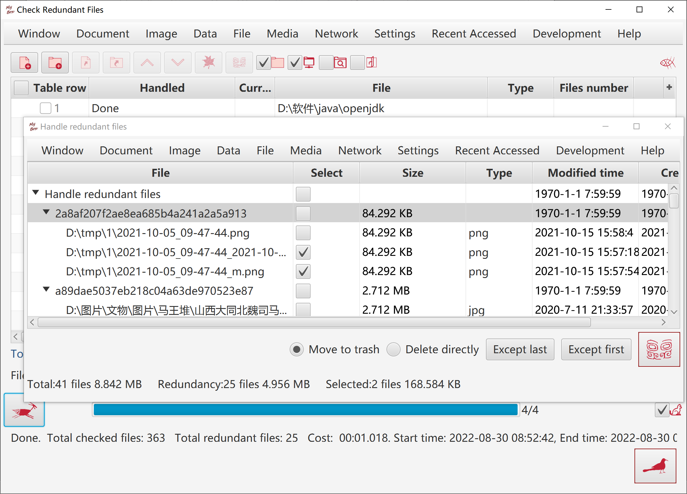
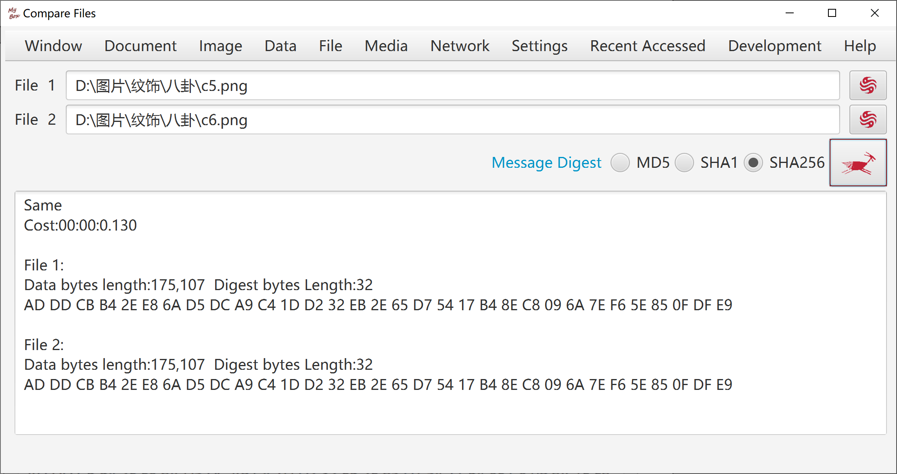
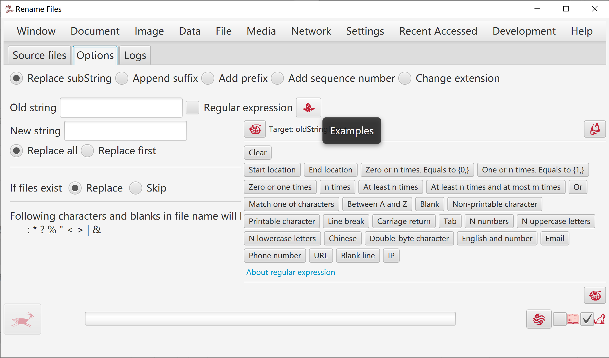
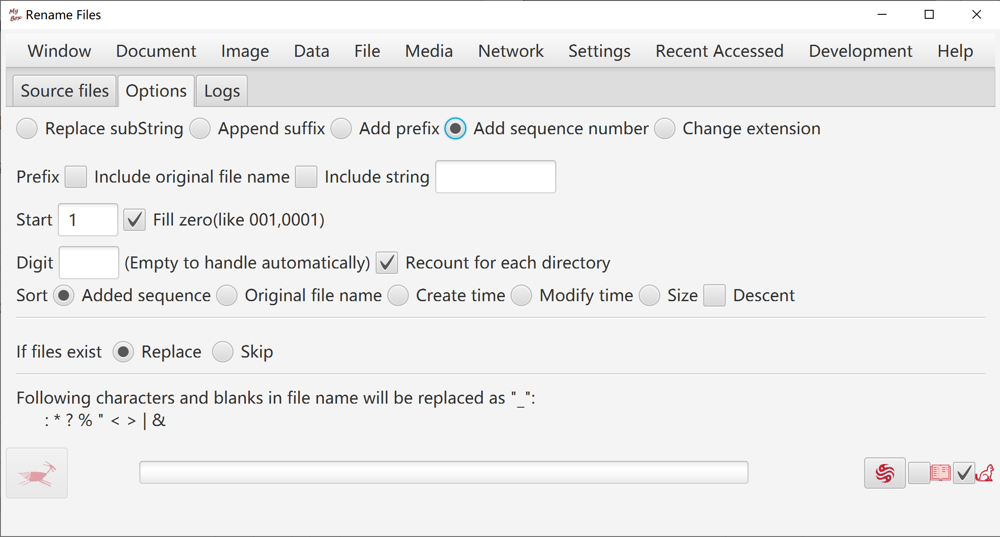
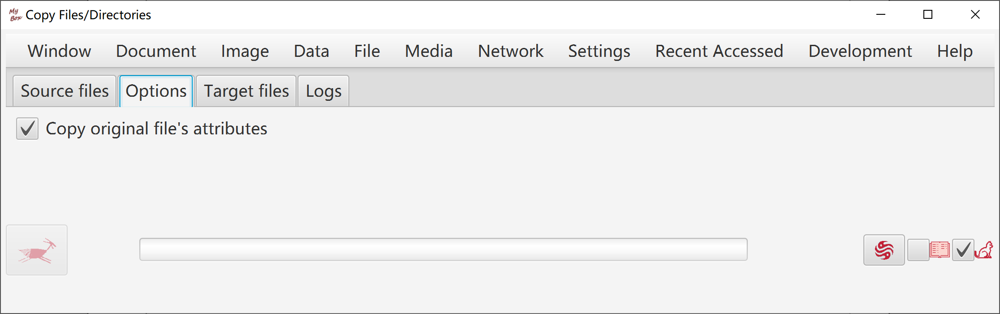
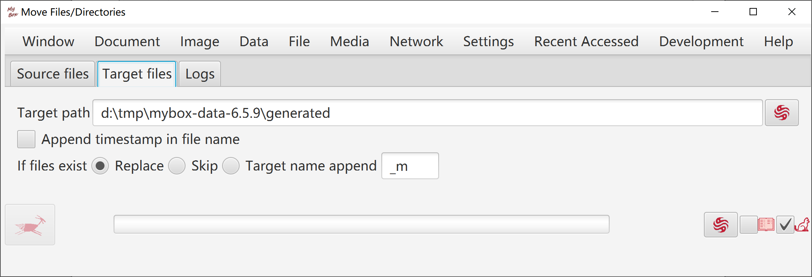
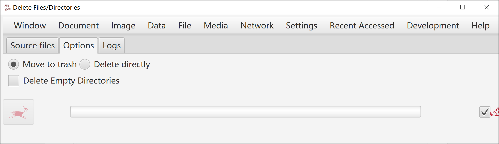
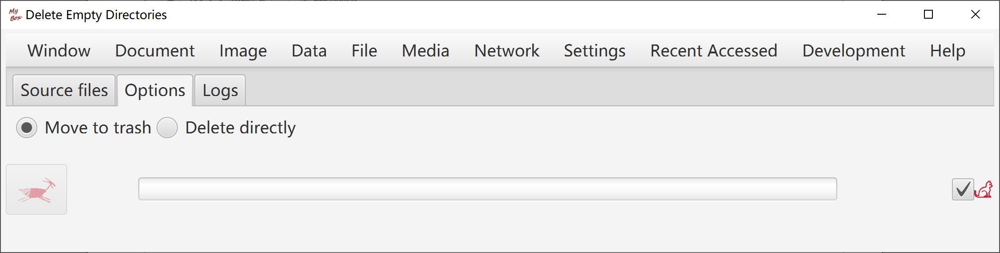
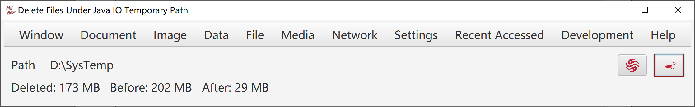
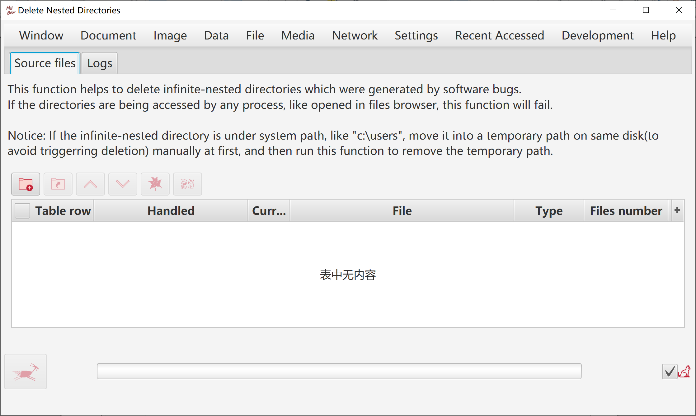
<End of Document>
Page